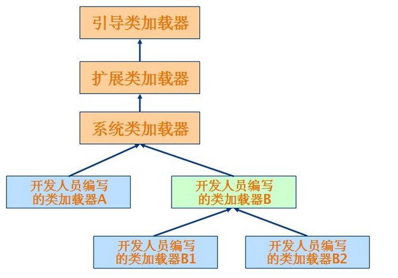
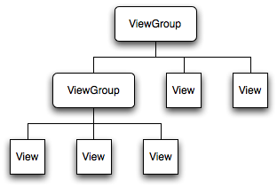
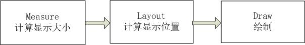

kong
Table of Contents
1 笔记
1.1 个人笔记
1.1.1 配置emacs
- emacs快捷键
命令类型 快捷键 快捷键描述 查找命令 C-s C-w 在查找模式下，查找光标指定位置处的单词 指定目录下查找文件 find-name-dired 指定目录下查找只包含指定内容的文件 find-grep-dired 与上边两个类似但自由度最高 find-dired gre
- 10.16 ecb 和 全屏显示
配置ecb darkroom 和 win32fullscreen 其中darkroom和win32fullscreen都可以实现全屏显示 主要用到了四个文件w32-fullscreen.el w32toggletitle.exe darkroom-mode.el frame-local-vars.el 将w32toggletitle.exe放在path目录中，其它三个el文件都配置在init.el文件 中
- 10.17 sr-speedbar
新增sr-speedbar功能，使speedbar可以在同一个frame中显示，不用重新开启一 个frame 下载sr-speedbar.el文件，在init.el文件中添加 (require 'sr-speedbar)
- 10.17 查看历史打开文件 和历史编辑记录
recentf-open-files命令 C-c o按键 goto-last-change C-c k 查看立即编辑记录
- 10.17 查看历史编辑记录
使用goto-last-change命令回到上次编辑的位置，快捷键是C-c k 快捷键C-c h被ecb占用
- 10.17 用iexp命令在org模式插入括号
C-x p you may try.
- 10.18 emacs打开文件的字符编码问题
使用命令revert-buffer-with-coding-system手动选择打开文件的字符编码， 在保存的时候还可以指定文件的保存编码，使用命令 set-buffer-file-coding-system
- 10.18 emacs配置etags
find -name "*.[chCH]" -print | etags - 命令用来生成TAGS visit-tags-table 用来查找指定的TAGS 成功配置etags f5可以查找TAG，f6可以查找当前TAG,C-f6可以回跳
- 10.28 emacs显示图片
参考博文： http://www.cnblogs.com/tianyuhuo/archive/2012/09/12/2012-9-12-1.html window中的emacs默认不能显示图片，而是一堆乱码，根本原因是缺少解析图片 所需要的dll，只要下载好指定图片对应的dll就可以了。两个下载地址： 地址1：GnuWin Packages
地址2：winterTTr's github
然后按M-x iimage-mode RET就可以了
要在org-mode里启用iimage-mode需要把一下代码加入emacs配置文件中
(defun org-toggle-iimage-in-org () "display images in your org file" (interactive) (if (face-underline-p 'org-link) (set-face-underline-p 'org-link nil) (set-face-underline-p 'org-link t)) (iimage-mode))
以后你只要输入M-x org-toggle-iimage-in-org RET或M-x iimage-mode RET就 可以了
1.1.2 学习Lisp
- List命令
关键字 简介 first 返回列表的第一个元素 rest 返回列表中除了第一个元素外的其它元素 car 作用同first，区别不详 cdr 作用同rest，区别不详 cons 构造函数，两个参数 append 连接两个列表 List 返回一个由所有参数组成的列表
- Lisp推荐书籍
SICP 麻省理工的本科教材，实例以schema表示 On Lisp 是迄今为止讲Lisp的书籍里最深的一本，适合有一定基础的人看，有一 定难度。 Successful Lisp 适合做入门教材 Practical Common Lisp 提供了很多面向对象的实例，但不推荐
- Lisp特性
自动内存回收 显示类型 闭包 Lisp凌驾于面向对象程序设计 动态的面向对象语言
- 学习Lisp 基本操作符
Lisp 的 7 个公理（基本操作符） 操作符一： quote (quote x) 返回x 操作符二： atom (atom x) 当 x 是一个原子或者空表时返回原子 t，否则返回NIL 操作符三： eq (eq x y) 当 x 和y 指向相同的对象的时候返回t，否则返回NIL，值得注意的是 在Common Lisp中，原子对象在内存中只会有一份拷贝，所以(eq 'a 'a)返回t 操作符四： car (car x) 要求 x 是一个表，它返回 x 中的第一个元素 操作符五： cdr (cdr x) 同样要求 x 是一个表，它返回x中除第一个元素之外的所有元素组成的 表 操作符六： cons (cons x y) 返回一个cons cell (x y)，如果y不是一个list，将会一dotted pair形式展现这个cons cell多重的cons cell就构成了表 (cons 'a (cons 'b (cons 'c ()))) (a b c)
操作符七： cond (cond (p1 e1) …(pn en)) 的求值规则如下. 对“条件表达式p”依次求值直 到有一个返回t. 如果能找到这样的p表达式,相应的“结果表达式e”的值作为整 个cond表达式的返回值. (cond ((eq 'a 'b) 'first) ((atom 'a) 'second))
- Lisp高级属性
构造函数 cons (cons 'lions '(tigers bears)) cons带有两个参数，一个原子和一个列表， cons将原子作为第一个原子添加到该列表中。 append (append '(lisons) '(tigers bears)) append连接两个列表 list (list 'lions 'tigers 'bears) list包含一个有所有参数组成的列表使用cons和first rest可以构建任何列表或者列表片段
循环操作 数循环 (dotimes (i 10) (print i)) 打印列表 (dolist (i '(0 1 2 3 3 4 5 6)) (print i)) 常见的do操作 (do ((i 0 (+ 1 i))) ((> i 10)) (print i))
1.2 学习笔记
1.2.1 java编程
- 面向对象的三个基本特征
封装、继承和多态 封装：把客观的数据和操作封装成抽象的类，只暴露一些对外的接口，具体实现 对外不可见。 继承：通过继承，它可以使用现有类的所有功能，并在无需重新编写原来的类的情况下对这 些功能进行扩展。 多态：对于同一个调用，父类的不同子类执行不同的操作。 多态的实现方式有两种，覆盖和重载。覆盖就是覆盖父类中的同名函数，参数 列表和返回值都必须相同。重载就是存在多个同名函数，参数列表不同，包括参 数个数不同或者参数类型不同，或者两者都不同，返回值随意。
- 网络通信
- java获取本机地址的方式
InetAddress.getByName("localhost") #结果总是127.0.0.1 InetAddress.getLocalHost(); #得到本机的有效网络地址
- java中创建socke超时的解决办法
Socket s = new Socket("time….", 13); #创建一个Socket连接 s.setSoTimeOut(1000); #设置socket获取信息的超时时间这里有一个问题，创建socket也有一个时间，如果连接不到服务器就会一直阻塞， 这里哟一个办法，先创建一个未连接的套接字，然后把该套接字连接到给定的地 址。 Socket s = new Socket(); #设置创建socket的超时时间 s.connect(new InetSocketAddress("time…", 13), 1000); s.setSoTimeOut(1000; #设置获取信息的超时时间
- java获取本机地址的方式
- 数据库操作
- 数据库连接
注意在使用mysql时，要首先加载mysql驱动程序类 Class.forName("com.mysql.jdbc.Driver"); 或者使用System.setProperty("jdbc.drivers", "com.mysql.jdbc.Driver");
- 数据库设计自增操作
如果要在某一列上设置自增操作，该列绝大多数时间必须是主键create table student(id int(4) primary key auto_increment,name varchar(20), age int) 创建一个student表，并且设置主键自增 对于自增字段插入时，如果指定要插入的列则不需要特殊处理，否则自增的列插 入null即可 insert into student values(null, 'xiaoming', 20)
- 存储过程
sql语句执行的时候要先编译，然后执行。存储过程（Stored Procedure）是一 组为了完成特定功能的SQL语句集，经编译后存储在数据库中。用户通过指定存 储过程的名字并给出参数（如果该存储过程带有参数）来执行它。数据库存储过程的实质就是部署在数据库端的一组定义代码以及SQL。
mysql存储过程实现过程 （1）MySQL存储过程是在“命令提示符”下创建的，所以首先应该打开“命令提示符”窗口。 （2）进入“命令提示符”窗口后，首先应该登录MySQL数据库服务器，在“命令提示符”下输入如下命令： mysql –u用户名 –p用户密码 （3）更改语句结束符号，本实例将语句结束符更改为“//”。代码如下： delimiter // 说明:存储过程用以;作为结束符，而;又是命令行下sql语句的结束符，所以要进 行更改 （4）创建存储过程前应首先选择某个数据库。代码如下： use 数据库名 （5）delimiter ; （6）创建存储过程。 （7）通过call语句调用存储过程。
存储过程示例:
create procedure pr_add ( a int, b int ) begin declare c int; -- 用来声明局部变量 -- DECLARE仅被用在BEGIN ... END复合语句里，并且必须在复合语句的开头，在任何其它语句之前。 if a is null then set a = 0; end if; if b is null then set b = 0; end if; set c = a + b; select c as sum; /* return c; 不能在 MySQL 存储过程中使用。return 只能出现在函数中。 */ end; #执行： set @a = 10; set @b = 20; call pr_add(@a, @b); create procedure pro_sort(a int) begin if a=0 then select * from student order by age desc; -- 降序排列 else select * from student order by age asc; -- 升序排列 end if; end; #创建 MySQL 存储过程的简单语法为： create procedure 存储过程名字() ( [in|out|inout] 参数 datatype ) begin MySQL 语句; end;
删除存储过程 DROP PROCEDURE IF EXISTS存储过程名 不能在一个存储过程中删除另一个存储过程，只能调用另一个存储过程
- 存储过程参数的三种形态
见示例 http://www.exampledepot.com/egs/java.sql/CallProcedure.html
- 数据库一些不常见概念
CachedRowSet 被缓存的行集：允许与用户的整个交互过程中，断开连接，并且 可以将修改的部分同步到数据库 数据库元数据 DatabaseMetaData:可以获取数据库的一些信息，比如表格 结果集元数据 RestltSetMetaData: 可以获取结果集的总列数，列名，列的宽度 可滚动的结果集
- 数据库连接
- jndi java命名与目录接口
java命名与目录接口，是java平台的一个标准扩展，提供一组接口、类和关于命 名空间的概念。如同其它很多java技术一样，JDNI是provider-based的技术，暴 露一个API和一个服务供应接口(SPI)。这意味着任何基于名字的技术都能通过 JNDI而提供服务，只要JNDI支持这项技术。 jdbc1.0使用DriverManager类来产生一个对数据源的连接，jdbc2.0使用 DataSource对象代表了一个真正的数据源。根据DataSource的实现方法，数据源 既可以是从关系数据库，也可以是电子表格，还可以是一个表格形式的文件，当 一个DataSource对象注册到名字服务中，应用程序就可以通过名字服务获得 DataSource对象并用它来产生一个与DataSource代表的数据源之间的连接。 命名服务：提供名称-对象的映射 目录服务：提供有关对象的信息，并提供定位这些对象所需的搜索工具。有许多 命名和目录服务的实现并且到它们的接口是不同的。
- URL和URI
URI: A uniform resource identifier (URI) is a compact sequence of characters that identifier an abstract or physical resource.Uniform, 统一。统一可以使不同类型的资源标志在同一个上下文中使用，即使 对这些资源的访问方式可能是不同的。 Resource， 资源。自理的资源可以是任何东西，比如电子表格，图片，邮件服 务等。 identifier, 标志符。标识符用来唯一标志Web中的资源，可以使用名称来作为 标志符，也可以用资源的地址作为标识符，前者称为URN(统一资源名称)，后者 称为URL(统一资源定位符)，所以URN和URL是URI的子集。
URL和URI的区别： URI确定一个资源，URL不但确定一个资源，也指定了资源的 地址。 比如下面的统一资源标志符确定因特网工程工作组RFC1738，但并没有说出在哪里才找得到这份资料 urn:ietf:rfc:1738
- Http Get/Post请求区别
- HTTP请求格式： <request line> <headers> <blank line> [<request body>] 在HTTP请求中，第一行是一个请求行，用来说请求的方式，要访问的资源， HTTP版本。然后是首部小节header，用来说明服务器要使用的附加信息。首 部之后是一个空行，然后是请求主体。
- GET和POST
HTTP定义了与服务器交互的不同方法，最基本的方法是POST和GET。HTTP-GET
和HTTP-POST是使用HTTP的标准协议动词，用于编码和传送变量名/变量值对
参数，如果请求成功则返回应答。URL字符串中如果含有中文字符则用base64
加密。
POST方式，变量名/变量值不作为URL的一部分传送，而是放在实际的HTTP请 求消息内部被传送
浏览器请求时，默认是GET方式 GET一般用于获取/查询 资源信息，而POST一般用于更新 资源信息 #根据HTTP规范，GET用于信息获取，而且应该是安全的和幂等的。 1.所谓安全的意味着该操作用于获取信息而非修改信息。换句话说，GET请求一般不应产生副作用。就是说，它仅仅是获取资源信息，就像数据库查询一样，不会修改，增加数据，不会影响资源的状态。
* 注意：这里安全的含义仅仅是指是非修改信息。
2.幂等的意味着对同一URL的多个请求应该返回同样的结果。
#根据HTTP规范，POST表示可能修改变服务器上的资源的请求。
get post 从服务器上获取数据 向服务器传送数据 在客户端，通过URL提交数据 数据放在HTML HEADER内提交 服务器端用Request.QueryString获取变量的值 服务器端用Request.Form获取提交的数据 提交的数据受到URL长度的限制，如IE限制长度为2083字节 没有限制 参数显示在地址栏，不安全 安全 示例代码
<!-分别通过get和post方式提交表单--> <FORM ACTION="getpost.asp" METHOD="get"> <INPUT TYPE="text" NAME="Text" VALUE="http://wxf0701.cnblogs.com//> <INPUT TYPE="submit" VALUE="Get方式"></INPUT> </FORM> <BR> <FORM ACTION="getpost.asp" METHOD="post"> <INPUT TYPE="text" NAME="Text" VALUE="http://wxf0701.cnblogs.com/> <INPUT TYPE="submit" VALUE="Post方式"></INPUT> </FORM> <BR> <% If Request.QueryString("Text") <> "" Then %> 通过get方式传递的字符串是： "<B><%= Request.QueryString("Text") %></B>"<BR> <% End If %> <% If Request.Form("Text") <> "" Then %> 通过Post方式传递的字符串是： "<B><%= Request.Form("Text") %></B>"<BR> <% End If %>HTTP响应实例
HTTP响应实例 HTTP/1.1 200 OK Date: Sat, 31 Dec 2005 23:59:59 GMT Content-Type: text/html;charset=ISO-8859-1 Content-Length: 122 ＜html＞ ＜head＞ ＜title＞Wrox Homepage＜/title＞ ＜/head＞ ＜body＞ ＜!-- body goes here --＞ ＜/body＞ ＜/html＞ 2．最常用的状态码有： ◆200 (OK): 找到了该资源，并且一切正常。 ◆304 (NOT MODIFIED): 该资源在上次请求之后没有任何修改。这通常用于浏览器的缓存机制。 ◆401 (UNAUTHORIZED): 客户端无权访问该资源。这通常会使得浏览器要求用户输入用户名和密码，以登录到服务器。 ◆403 (FORBIDDEN): 客户端未能获得授权。这通常是在401之后输入了不正确的用户名或密码。 ◆404 (NOT FOUND): 在指定的位置不存在所申请的资源。
#+begin_src ditaa :file helloworld.png :cmdline -r -s 1.5 -e UTF-8 +-----------+ | cBLU | | 你好 | | +------+ | |cPNK | | |世界 | +----+------+ #+end_src
- javabean 和 Enterprise JavaBean的区别和联系
javabean是一种java语言编写的可重用组件。javabean的类必须是具体的和公开的，并且具有无参数构造器，javabean通过提供符合一致性设计模式(这和通常的设计模式不同，只是一种理念)的公共方法暴露内部域成员变量，通常是get/set方法JavaBean 和 Server Bean（通常称为 Enterprise JavaBean (EJB)）有一些基本相同之处。它们都是用一组特性创建，以执行其特定任务的对象，获得其它特性的能力。这使得 bean 的行为根据特定任务和所在环境的不同而有所不同。
javabean Enterprise JavaBean 使用java.beans包开发 使用javax.ejb包开发 beans包是java2标准的一部分 ejb包是标准JDK的扩展 一台机器上同一个地址空间中运行的组件 在多台机器上跨几个地址空间运行的组件 javabean是进程内组件 ejb是进程间组件 通常用作GUI窗口小部件 用作分布式商业对象 javabean存在与四种范围：页面(page)，请求(request)，对话(sessin)，应用(application)。
对话范围： 对话范围的JavaBean 主要应用与跨多个页面和时间段： 例如填充用户信息。 添加信息并且接受回馈，保存用户最近执行页面的轨迹。对话范围JavaBean保留一些和用户对话 ID 相关的信息。这些信息来自临时的对话cookie，并在当用户关闭浏览器时，这个cookie将从客户端和服务器删除。 页面/请求范围： 页面和请求范围的JavaBean有时类似表单 的bean ， 这是因为他们大都用于处理表单。表单需要很长的时间来处理用户的输入??外页面和请求范围的bean可以用于减少大型站点服务器上的负载，如果使用对话bean，耽搁的处理就可能会消耗掉很多资源。 应用： 应用范围通常应用于服务器的部件，例如 JDBC连接池、应用监视、用户计数和 其他参与用户行为的类。
javaBean持久化是指以流的形式，用JavaBean的属性来保存bean，并在以后的某 个时候或者在另一个虚拟机中再将它们读回来，和对象的序列化有点类似，然而 它们有一个非常重要的区别，javabean持久化适合于长期存储。
当一个对象被序列化存储以后，如果类的实现发生了变化，则把对象重新读出来 的时候就要在新旧数据表现之间进行转化。因此对象序列化仅适合于短期存储或 者应用程序之间的RMI。
JavaBean的持久化可以考虑三种方式：数据库、XML文件、二进制流 第一种方式可以使用O/R Mapping技术将一个JavaBean映射到关系数据库中的表； 第二种方式可以使用JAVA1.4 的 java.beans.XMLDecoder/java.beans.XMLEncoder将Bean映射到一个XML文件中； 第三种方式要求Bean实现Java的Serializable接口；
- 类加载器
- 基本概念
一般来说，java虚拟机使用一个类的方式如下：java源程序在经过java编译器编译之后就被转换成java字节码文件.class，虚拟机加载字节码文件被转换为 java.lang.Class的一个实例，每个这样的实例代表一个java类，然后通过这个实例的newInstance()方法生成一个对象。基本上所有类加载器都是java.lang.ClassLoader的实例。
- java.lang.ClassLoader类介绍
java.lang.ClassLoader的主要作用是根据一个给定类的名字，查找该类的字节码文件，并生成一个class实例，它同时也加载java类所需要的一些资源如图像和配置文件。java.lang.ClassLoader与加载类有关的方法
方法 说明 getParent() 返回该类加载器的父加载器 loadClass(String name) 加载名称为name的类，返回结果是java.lang.Class的实例 findClass(String name) 查找名称为name的类，返回结果是java.lang.Class类的实例 findLoadedClass(String name) 查找名字为name的已经加载过的类，返回结果同上 defineClass(String name, byte[] b, int off, int len) 把字节数组b中的内容转换成java类，返回结果同上 resolveClass(Class<?> c) 连接指定的java类
- 类加载器的树状组织结构
java中的类加载器分为两种，一种是系统提供的，另一种是由java应用开发人员 编写的。java中系统提供的类加载器有三种： •引导类加载器（bootstrap class loader）：它用来加载 Java 的核心库，加载系统类(通常从jar文件rt.jar中进行加载)，它是虚拟机整体中的一部分，通常用原生代码C来实现的，并不继承自java.lang.ClassLoader，使用String.class.getClassLoader()将返回null。 •扩展类加载器（extensions class loader）：它用来加载 Java 的扩展库。Java 虚拟机的实现会提供一个扩展库目录(jre/lib/ext)。该类加载器在此目录里面查找并加载 Java 类。 •系统类加载器（system class loader）：它根据 Java 应用的类路径（CLASSPATH）来加载 Java 类。一般来说，Java 应用的类都是由它来完成加载的。可以通过 ClassLoader.getSystemClassLoader()来获取它。
扩展类加载器和系统类加载器通常都是由java实现的，它们都是URLClassLoader类的实例。 Class.forName()是使用系统类加载器加载的。
除了引导类加载器外，每个类加载器都有一个父类加载器， 通过getParent()方 法可以得到，类加载器会为它的父类加载器提供一个机会，以便加载任何给定类， 只有在其父类加载器加载失败时，它才会加载给定类。
类加载器树状组织结构示意图

- 类加载器的代理模式
在介绍代理模式背后的动机之前，首先需要说明一下 Java 虚拟机是如何判定两 个 Java 类是相同的。Java 虚拟机不仅要看类的全名是否相同，还要看加载此 类的类加载器是否一样。只有两者都相同的情况，才为两个类是相同的。即便是 同样的字节代码，被不同的类加载器加载之后所得到的类，也是不同的。比如一 个 Java 类 com.example.Sample，编译之后生成了字节代码文件Sample.class。 两个不同的类加载器 ClassLoaderA和 ClassLoaderB分别读取了这个 Sample.class文件，并定义出两个 java.lang.Class类的实例来表示这个类。这 两个实例是不相同的。对于 Java 虚拟机来说，它们是不同的类。试图对这两个 类的对象进行相互赋值，会抛出运行时异常 ClassCastException。
了解了这一点之后，就可以理解代理模式的设计动机了。代理模式是为了保证 Java 核心库的类型安全。所有 Java 应用都至少需要引用 java.lang.Object类，也就是说在运行的时候，java.lang.Object这个类需要被加载到 Java 虚拟机中。如果这个加载过程由 Java 应用自己的类加载器来完成的话，很可能就存在多个版本的 java.lang.Object类，而且这些类之间是不兼容的。通过代理模式，对于 Java 核心库的类的加载工作由引导类加载器来统一完成，保证了 Java 应用所使用的都是同一个版本的 Java 核心库的类，是互相兼容的。
- 网络类加载器
Java 字节代码（.class）文件存放在服务器上，客户端通过网络的方式获取字节代码并执行。当有版本更新的时候，只需要替换掉服务器上保存的文件即可。通过类加载器可以比较简单的实现这种需求。 类 NetworkClassLoader负责通过网络下载 Java 类字节代码并定义出 Java 类。 它的实现与 FileSystemClassLoader类似。在通过 NetworkClassLoader加载了 某个版本的类之后，一般有两种做法来使用它。第一种做法是使用 Java 反射 API。另外一种做法是使用接口。需要注意的是，并不能直接在客户端代码中引用从服务器上下载的类，因为客户端代码的类加载器找不到这些类。使用 Java 反射 API 可以直接调用 Java 类的方法。而使用接口的做法则是把接口的类放在客户端中，从服务器上加载实现此接口的不同版本的类。在客户端通过相同的接口来使用这些实现类。
- 基本概念
- JNI见参考文档
- java注解
Annotation(注释)是JDK5.0及以后版本引入的,它可以用于创建文档，跟踪代码 中的依赖性，甚至执行基本编译时检查。注释是以‘@注释名’在代码中存在的， 根据注释参数的个数，我们可以将注释分为：标记注释、单值注释、完整注释三 类。它们都不会直接影响到程序的语义.只是作为注释（标识）存在。- 用于编译的注解
@Deprecated注解可以被添加到任何不在鼓励使用的项上 @SuppressWarnings注解会告知编译器阻止特殊类型的警告信息，例如： @SuppressWarnings("unchecked") @Override这种注解只能应用到方法上，编译器会阻止具有这种注解的方法去覆 盖一个来自于超类的方法。 @Generated注解的目的是供代码生成工具来使用。任何生成的源代码都可以使用， 用来区分程序员写的代码。
- 用于管理资源的注解
@PostConstruct和@PreDestroy注解用于控制对象生命周期的环境中，标记了这 些注解的方法应该在对象被构建之后，或者在对象被移除之前，紧接着调用。@Resurce注解用于资源注入，例如，数据库访问信息不应该被硬编码到web应用 中，而是应该让web容器提供某种用户接口，以便设置连接参数和数据库资源 JNDI名字，在web应用中，可以像下面这样引用数据源： @Resource(name="jdbc/mydb") private DataSource source;这样由容器给DataSource对象赋值
- 元注解@Target
@Target元注解可以应用于一个注解，以限制该注解可以应用的范围，例如： @Target({ElementType.TYPE, ElementType.METHOD}) public @interface BugReport 表明注解BugReport只可以应用在类，接口和方法上。public @interface Test { public int id(); public String description() default "no description"; } package Test_annotation; import java.lang.reflect.Method; public class Test_1 { /* * 被注解的三个方法 */ @Test(id = 1, description = "hello method_1") public void method_1() { } @Test(id = 2) public void method_2() { } @Test(id = 3, description = "last method") public void method_3() { } /* * 解析注解，将Test_1类 所有被注解方法 的信息打印出来 */ public static void main(String[] args) { Method[] methods = Test_1.class.getDeclaredMethods(); for (Method method : methods) { /* * 判断方法中是否有指定注解类型的注解 */ boolean hasAnnotation = method.isAnnotationPresent(Test.class); if (hasAnnotation) { /* * 根据注解类型返回方法的指定类型注解 */ Test annotation = method.getAnnotation(Test.class); System.out.println("Test( method = " + method.getName() + " , id = " + annotation.id() + " , description = " + annotation.description() + " )"); } } } }
- 用于编译的注解
1.2.2 c编程
- 类型提升 不怎么准 在ANSI C中已经取消了
整型提升，就是char,short,int和位段类型(无论signed或unsigned)以及枚举类 型将被提升为int，前提是int能够完整的容纳原先的数据，否则将被转换为 unsigined int。float将被转换为double类型，任何数组将被转换为相应类型的 指针。 char c1,c2; c1 = c1 + c2; 运算的时候，把每个变量的值提升为int的 长度，然后对int执行加法，然后对运 算结果进行裁剪。 试试sizeof('c')的值 注意：另一个会发生隐式类型转换的地方就是参数传递，由于函数的参数也是表 达式，所以也会发生类型提升，在被调用函数的内部，提升后的参数被裁剪为原 先声明的大小。
- fgets()函数
fgets(s, n, stdin); 函数最多接收n-1个字符，并自动在字符串最后加上结束 符号，如果输入字符个 数少于n-1，会接收回车符，然后在后边加上字符串结束 标志，所以如果输入字 符个数少于n-1的时候，后边多了一个回车符号，注意手 动去除. s[strlen(s)-1]=0
- swap交换两个元素 注意情况
*a ^= *b; *b ^= *a; *a ^= *b; 当a,b指向同一个元素时，该元素最后会被置为0，如果不是同一个元素，可以正 常交换
1.2.3 系统编程
- 可执行文件的内存布局
可执行文件内部主要包括文本端text，数据段data，和BSS段，用size命令可以 查看可执行文件a.out的大小。 数据段主要放置的是经过初始化的全局变量和静态变量，注意是经过初始化的， 如果没有被初始化则会放在BSS段，文本段主要放置可执行程序的指令。 局部变量并不进入a.out，它们在运行时创建。
- 进程的地址空间
注意：进程的地址空间和可执行程序的内存空间不太一样。 它除了包括上边的文本段，数据段和BSS段之外，还需要保存堆栈段，用于保存 局部与函数的数据。 同时，注意虚拟地址空间的最低部分未被映射，它位于进程的地址空间中，但并未赋予 物理地址，所有对它的引用都是非法的，在典型情况下，它是地址零开始的几K 字节，用于捕获使用空指针和小整形值的指针引用内存的情况。 堆栈段占据进程空间的最高地址，并向下增长。
- 段错误和BUS错误
常见的段错误和BUS错误，BUS错误通常是由于数据在内存中不对齐引起的union{ char a[10]; int i; }u; int * p = (int *)&(u.a[1]); *p = 17;在实例中，数组a在共用体中是和int对齐的，所以a1必然不和int对齐，然后 在这个地方放入一个4字节的数据会引发BUS错误。
段错误比较常见，通常是
- 坏指针值错误。在指针赋值前就用它来引用内存，指针释放后再将它置为空 值。
- 改写错误。 数组越界。
- 释放链表出错。
- 捕捉信号signal
使用头文件signal.h,使用句柄函数signal(SIGSGEV, handler) 常见的错误信号值SIGBUS,SIGSGEV,SIGILL
- unix系统中逐字符输入的两种实现
一种是把I/O设置为raw状态，可以实现阻塞式读入，如果终端没有字符输入，进 程就一直等待，直到有字符输入为止。#include <stdio.h> #include <stdlib.h> int main() { int c; /* 中断驱动原来处于普通的一次一行模式*/ /* 把终端设置为raw状态可以实现阻塞式读入*/ system("stty raw"); while(1){ /*现在驱动处于一次一字符的模式*/ c=getchar(); putchar(c); if(c=='q') break; } /* 终端驱动又处于一次一字符的方式 */ system("stty cooked"); return 0; }另外一种方式是使用ioctl(),这样只有当一个字符等待被读入时，进程才进行读 取，这种类型的I/O被称为轮询，就好像你不断地询问设备的状态，看看它是否 有字符要传给你。
#include <stdio.h> #include <stdlib.h> #include <signal.h> #include <sys/ioctl.h> int kbhit() { int i; /* 设置I/O轮询 */ ioctl(0, FIONREAD, &i); return i; } int main() { int i=0; int c=' '; system("stty raw -echo"); printf("enter 'q' to quit \n"); for(;c!='q';i++){ if(kbhit()){ c=getchar(); printf("\n got %c, on iteration %d", c, i); } } system("stty cooked echo"); }
- 函数库调用和系统调用的区别
system是一个库函数 strlen并不调用任何系统调用 函数库调用是语言或应用程序的一部分，而系统调用是操作系统的一部分 系统调用时用户程序和内核交互的接口函数库调用 系统调用 在所有的ansi c编译器版本中，c库函数是相同的 各个操作系统的系统调用时不同的 它调用函数库中的一个程序 它调用系统内核的服务 与用户程序相联系 important 是操作系统的一个入口点 在用户地址空间执行 important 在内核地址空间执行 它的运行时间属于用户时间 important 它的运行时间属于系统时间 属于过程调用，开销较小 important 需要切换到内核上下文环境然后再切换回来开销大 在C函数库libc中有大约300个程序 在unix中有大约90个系统调用(MS-DOS)中少一些 自己总结
函数库调用 系统调用 通常提供比较复杂的功能 通常提供一种最小界面 int main() { int fd = create("filename",0666); exit(0); }在执行main函数时，是在user mode下执行，当遇到create函数时，继续在user mode下执行，然后将filename和0666两个参数压入栈中寄存器，接着调用库函数 create，系统仍然处于user mode。 这里的库函数create实际上调用了内核的系统调用create，执行到这里后，系统将create系统调用的unique number压入寄 存器，然后执行指令trap使系统进入kernel mode(执行int $0x80产生中断)。 这时系统意识到要进行系统调用的invoke，于是从刚才的寄存器中取出create系统调用的unique number，从系统调用表中得知要invoke的系统调用是create，然后执行。执行完毕返回库函数create的调用，库函数负责检查系统调用的执行情况(检查某些寄存器的值)， 然后库函数create根据检查的结果返回响应的值。
这里trap指令类似于一个系统中断并且是软中断，而系统调用create类似于一个中断处理函数 所有的系统调用都与上边的情况类似，靠中断机制切换到内核模式实现。
系统调用通常比库函数要慢，因为要把上下文环境切换到内核模式
- 内核开发的特点
- 内核编程时不能访问C库，也不能访问标准的C头文件
- 内核编程时必须使用GNU C
- 内核编程时缺少像用户空间那样的内存保护机制 内核中的内存都是不分页的，每用掉一个字节，物理内存就减少一个字节。
- 内核编程时难以执行浮点运算 不要轻易在内核中使用浮点数
- 内核给每个进程只有一个很小的定长堆栈 内核栈的大小是两页，32位机的内核栈是8KB，而64位机是16KB，固定不变， 每个处理器都有自己的栈。用户空间的栈比较大，而且通常可以动态增长， DOS不可以。
- 内核支持异步终端，抢占和SMP，因此必须时刻注意同步和并发
同步和并发
内核很容易产生竞争。和单线程的用户空间程序不同，内核的许多特性都要求
能够并发地访问共享数据。
- Linux是抢占式多任务操作系统
- Linux支持对称多处理器系统
- 中断是异步到来的 中断异步到来，完全不顾及当前正在执行的代码。如果不加以适当的保护， 中断完全有可能在代码访问资源的时候到来，这样中断处理程序就有可能访 问同一资源
- Linux内核可以抢占。所以如果不加以适当保护，内核中一段正在执行的代
码可能会被另外一段代码抢占，从而有可能导致几段代码同时访问相同的资
源。
常用的解决竞争的方法是自旋锁和信号量。
- 文件描述符和文件指针的区别
在linux系统中把设备和普通文件也都看做是文件，要对文件进行操作就必须先打开文件， 打开文件后会得到一个文件描述符，它是一个很小的正整数，是一个索引值。内核会为每一个运行中的进程在进程控制块pcb中维护一个打开文件的记录表， 每一个表项都有一个指针指向打开的文件，上边的索引值是记录表的索引值。
文件描述符的优点：兼容POSIX标准，许多系统调用都依赖于它；缺点是不能移 植到unix之外的系统上去。
文件指针：c语言中使用的是文件指针而不是文件描述符来作为I/O的句柄，文件 指针指向进程的用户空间中一个FILE结构的数据结构，FILE结构里主要包括一个 I/O缓冲区和一个文件描述符，而文件描述符值是文件描述符表中的一个索引， 从某种意义上将文件指针就是句柄的句柄(在Window中文件描述符被称为文件句 柄)。
文件指针的优点：是c语言中的通用格式，便于移植。
既然FILE结构中含有文件描述符，那么可以使用fopen来获得文件指针，然后从 文件指针获取文件描述符，文件描述符应该是唯一的，而文件指针却不是唯一的， 但指向的对象是唯一的。
C语言文件指针域文件描述符之间可以相互转换 int fileno(FILE * stream) FILE * fdopen(int fd, const char * mode)
open和fopen的区别
open fopen open返回一个文件描述符 返回FILE * 无缓冲 有缓冲 与write()和read()配合使用 与fwrite()和fread()配合使用 FILE的结构
struct _iobuf { char *_ptr; //缓冲区当前指针 int _cnt; char *_base; //缓冲区基址 int _flag; //文件读写模式 int _file; //文件描述符 int _charbuf; //缓冲区剩余自己个数 int _bufsiz; //缓冲区大小 char *_tmpfname; }; typedef struct _iobuf FILE; int fd = open("TAGS", O_RDONLY); FILE * fp = fopen("TAGS", "r"); printf("%d %d\n", fd, fp->_file); 可以从文件指针中获取文件描述符 fileno(fp) 和fp->_file效果是一样的 FILE * fp = fdopen(fd, "r") 根据文件描述符加上访问模式可以得到文件指针
- makefile规则
- ':='和'='的区别
':='和平时使用的赋值符号相同，'='则不同，使用'='时，函数和变量参考会留 在那儿，改变一个变量的值会导致其它变量的值也被改变，类似于指针。
- ':='和'='的区别
1.2.4 Linux常见问题
- /etc/shadow文件被覆盖 su故障
重启电脑在root账户下执行passwd kong重新生成账户密码, 执行 sudo passwd root重新生成ro ot的密码,然后su就可以恢复工作
- 文件的每一行后边多一个M
这个问题是由于Unix和Window的换行符不一样造成的Unix中是以\n作为换行， Window中是以\n\r作为换行符，一个直接结果是，Unix系统下的文件在Window中 打开都是一行，Window下的文件在Unix下打开的话在 每行的结尾可能会多出一 个M符号在Unix下转换Window下文件的两种方式：
- 命令dos2unix test.file
- 去掉'\r', 用命令sed -i 's/\r//' test.file
ok!!
1.3 面试经验收集
1.3.1 面试资料
vjulyv整理的面试题 http://blog.csdn.net/v_july_v 程序员面试题精选100题-何海涛
1.3.2 2012百度某部门 java研发
研一小硕一枚，本科我邮计算机，玩了四年，在论坛上看到百度忘记哪个部门招java实习生，就投了简历凑了凑热闹 先是电面，问了几个比较基础的问题，比如.equals()和==的区别，Spring中IOC和AOP什么意思，还有java中collection框架的架构..然后有人通知面试，这勉强算第一面 下午到百度，然后先做了一个小时的笔试题，大概能做出来一半吧..发现他们问的题都很底层，比如SSH，不会问你怎么用，而是问你怎么理解它的设计思想的..貌似有个Hibernate中的懒加载..就果断不会了…Java也是很底层的，印象比较深的有个问什么叫unchecked Exception和checked Exception….当时只知道有RuntimeException…就随便写了写.还有设计模式的东西，面java肯定要问设计模式的..后来感觉笔试仅仅是给你一个表现自己的机会，有个题不会也不要紧，把与题目相关的东西，知道多少就写多少… 交完卷子等了半个小时然后来了个美女mm来二面…先是讲了项目上的东西，问了很多关于SSH和Flex里面的东西..看到我项目里面用过Ibatis/Mybatis..然后巴拉巴拉讨论了很多，比如Ibatis/Hibernate的区别以及Ibatis/Mybatis的区别，还有使用时的细节…然后又问了很多java基础的知识..设计模式的时候问了个单例模式，之前在一本书上看过单例模式有线程安全和线程不安全的两种写法，就巴拉巴拉讲了一大堆..还问了很多线程方面的知道。数据库方面先出了一个题让我写一个SQL语句，然后让我自己写一个我能想到最复杂的Sql语句..我的项目里面有涉及到数据库设计的，又讨论了很多.. 二面结束了让我在原地等着..后来来了一个看着就像大牛的员工来三面..三面问的东西各种发散各种宽广..差不多五分钟一道题问了一个小时….印象比较深的是HashMap/HashSet的内部实现原理，还好之前看过它们的源码..这个问题不要简简单单的回答散列表…看看源码就会知道里面还有好多重要知识…还有+号和append的区别..线程的实现方式以及优缺点..以及我对java中collection框架的看法..还有很多SSH方面的问题..具体的忘了…算法问了一个全排列的递归和非递归，编程之美上面有的..还有一个二分查找 三面完了让我在那里等..一般实习生最多就是三面..我就在那里等结果..出来一个HR姐姐对我说项目头儿想面我..让我明天下午来..当时我就凌乱了..我是下午一点半开始笔试的…面到五点半.. 第二天下午四面，面试官问的知识更发散了..有个问题是让我自己设计一套jdk我该怎么设计…当时我就凌乱了…反正也没正确答案就胡诌了一堆东西..然后问了很多代码优化的东西，问我对自己参与过的项目代码的优化经历以及有什么想法..还有对设计模式的理解和看法..反正问的都是没有正确答案的，要靠自己的经历总结和归纳，当时是能想多少就说多少…我的项目里面涉及到数据库的不少,问了一个内存数据库的问题..就是把数据库放在内存中需要注意哪些问题…问题很发散…和面试官巴拉巴拉聊了两个小时..然后让我回去等消息 在回去的地铁上收到了HR的电话让去报道.. 虽然因为某些原因最终还是没有去百度实习..这次面试获益匪浅啊..一次电面，一次笔试，然后三面.. java基础方面一定要扎实..能看源码最好看源码..以前学的太漂了.. 框架方面主要理解思想跟设计方法..比较注重于概念.. 数据库设计跟Sql的书写还是挺重要的 算法这次问的倒不多..估计跟岗位有关系吧..
1.3.3 百度三面
今天让同学帮查了百度面试结果，倒在三面上，写点东西纪念下吧。 百度一直是我最想进的公司。应该是四月份开始吧，就到处寻找百度的实习信息投简历，也让师兄帮忙内推，但每一次都是石沉大海，毫无音讯。直至迎来了暑期实习招聘。当时前两面地挺顺利，但是由于时间太晚，HR就让先回去了。之后等了好久才等来电话三面，直接拿手机做算法题被搞死了。 实习招聘结束后，我又开始进入散投的状态。但发现这时百度似乎实习生已经招满了。不过我还是坚持每天投几份。直到某一天收到回信，兴奋地打开邮件，赫然几个大字“你好，你的简历未通过筛选，谢谢。”也许这种行为已经使他们反感了吧，我只得安心去别的地方了。 实习的日子果然不出自己所料，做自己不想做的工作是一件很不开心的事，枯燥无味。我能做的只有等待。也怪自己不争气，那段时间没有把握住机会好好学一点东西，否则也不会导致现在的结果。现在想想，实习仅有的收获也许就是那几千块钱工资吧。 临近百度校招时，百度实习招聘也渐渐多了起来。当时觉得如果不是实习生去面试会吃亏，所以一有机会就找人内推，只是依然无果。 时间过的很快，10月20号转眼就到了。由于时间很近，很多记忆还没有消退。顺便把面经写一下，一来攒RP，二来让各位来指出我的不足之处。 一面的时候被HR分配到一个胖子那里。胖子首先让我写个单链表逆置，结果表头没有返回。被他指了出来。也许就是这道题给了他不好的印象，接下来的面试很不顺利，几乎没有说过完整的话，以下的省略号全是被他打断的内容。 “自我介绍一下吧。” “我叫XX，北邮计算机专业硕士。研究生期间…” “这个项目你在里面做什么的？”他指着简历说。 “负责工作流引擎和一些mapreduce算法的开发”。 “mapreduce的运行过程是什么样的？” “比如一个大文件…” “mapreduce分为哪三个阶段？” “map，shuffle，reduce。” “一堆url和一堆site，找出现在url里的site。用mapreduce做，只写reduce。” 我有点莫名奇妙，reduce的输入都不知道呢，怎么写啊。说了下，然后他同意先写map，再写reduce。我在纸上画了画。 “map以site为key，文件来源为value；reduce端value同时包含两个文件来源的就输出。” “这是什么东西？” 他指着我的纸上问reduce输入问。 “相同key的value作为一个iterator输入啊!” “你确定？” “恩。” “你好好回去看一下mapreduce吧。不过你的思路是对的。”说道这里我真不懂了，难道不是iterator吗？ “常用的分类算法有哪些？” “贝叶斯啊，决策树啊…” “两个有什么区别？” “贝叶斯是基于贝叶斯定理，假定属性都是独立的…” “不用说那些，有什么区别？” 我想了想，除了都是分类算法，满眼都是区别啊。 “如果输入有十个维度，怎么做” “决策树的话，比如…” “不用比如，怎么做？你这理工科基础要加强，你作为一个硕士生，对吧。你太浮躁了。” “我看你简历里有很多前端的东西啊，以后写简历，这些东西不要写，像个大杂烩。我们不知道招什么人。” “这是什么？”他指着简历问。 “是一个预测模型…” “BG是什么，NBD是什么？” “NBD是…” “是NBD，不是MBD”他声音严厉起来。 “我念的就是NBD。不过我还真忘了这个缩写的具体含义，我给您说下原理…” “我知道，但是你得对自己的简历负责。” “你这个流失预测的算法是用clementine内置的是吧?” “对，不过…” 他示意我不要说话了，然后拿着笔在空中悬了悬，往桌上一拍，在电脑打起字来，边打边说：“你是我面试中见过非常差的，我可以让你过，但是保底的，明白我的意思吧。” 我木然的点了点头。 “SVM知道吗？” “恩。是个分类算法，就是找到一个超平面…” “所有分类算法都是企图解决这个问题” “脚本语言懂吗？” “会点Python，在贴吧上抓点邮箱，然后…” “一个链表，只给指向该节点的指针，怎么删除？五分钟换题。” “如果不是最后一个节点，直接把后一个赋值给前一个，然后删除后一个节点。否则得重新遍历。” “16瓶药水，一瓶不一样。放在一起发生化学反应。最少用几个试管可检测。还是五分钟。” “4个，用二进制解决。一试管代表一位…” “你看过这道题对吧？” “恩。” “不错，很诚实。” 然后他在纸上写着char *s=”abcde”。Sizeof(s)和strlen(s)有什么区别。 “strlen会比sizeof小1”。说完我看到他嘴角浮起得意的笑容。我定睛一看，忙说“不对不对，s是指针，sizeof就是4。”可惜的是他嘴角的笑容仍然挂在那，没有消失。回想起之前还在看虚继承内存布局，RTTI这些内容，面试却是这样一个结果。 “之前说的reduce输入…” “我面试是考察你的能力，不是跟你探讨问题”他又变得严厉起来。 “笔试那道计算字符串相似性的题目你做出来了吗？” “做出来了。” “怎么做的？” “用动态规划。”然后我在纸上把状态转移方程写了出来。 “你这个空间复杂度…” “用滚动数组。因为状态i+1只跟i相关…” “好了，怎么计算两个网页的相似性？” “给他们分词，建立向量…” “分词?比如一个div里一堆内容，一个table里一堆内容，两个内容相同，这两个网页是相似的吗？你回去好好想想吧。” 一面就这样结束了。二面是自己选的面试官，我特意找了一个长得比较帅的，把简历递给他了。这面比较成功，就不用对话的形式描述了。 第一道是给一个循环有序数组，用logn算法求一个数的位置。我就说第一次二分查找临界点，第二次利用临界点位置再二分查找那个数。然后他让我把查找临界点的代码写一下。 写好之后，被他找出一个bug，当数组长度为1的时候有问题。 接着他让我介绍一个项目。我bla bla说了一通，他很认真的听着，估计也没怎么听懂。实验室的项目就是玩具，只能靠概念忽悠了。 第二道题是一堆村庄，输入这些村庄哪几对是可达的，然后查询两个村庄是否可达。我说用并查集。接着把merge的代码写好，find的思路跟他说下，他表示认可。然后又问如果只查询一次该怎么做，我说宽搜或者深搜。把宽搜的思路说下，这个比较简单。 第三道题是用mapreduce实现表连接，也比较简单。 第四道题是一个人1/2的概率去酒馆，1/2呆家里。酒馆有8个，去的概率都是一样的。另一个人去酒馆找他，发现前7个酒馆都不在，问在第8个酒馆的概率。我想的时间略长，然后他问该怎么做。我说用贝叶斯定理，他说对，就换题了。 第五道题是给10亿个数去重，我就说分段用bitmap。他说bitmap怎么做，我就说用STL啊。然后让我自己实现，简单地写了个代码。 二面差不多就是这样。离开的时候，我向面试官摆了摆手说再见，他诡异地笑了笑。 三面等待的时候，心中忐忑不已。最后实在坐不住了，就主动去三面了。三面的面试官一看就不是好对付的角色，顿时觉得有些紧张。旁边坐着一个女人玩手机，应该是他的妻子。只是他笑着跟我连说了三声Hi，我才轻松下来，找了份简历递给他。
1.3.4 2012微软面试心得
注：没太多规划便写了，想到哪写到哪，有些乱，望见谅…… 注2：上传程序员面试题精选100题-何海涛 电子版~
趁着大多互联网校招的正式面试还没全面开展，分享一些自己找实习/工作的经验心得，也适当给明年找工作的师弟师妹们一些信息，攒攒RP。
个人背景简介 我邮计算机本科和网研小硕，计算机专业。 本科期间，前两年学习成绩中等偏上，主要精力放在学生工作和业余兴趣中。大三之后决意读研，好好学习，然后考研顺利，在网研院交换中心读研。研究生在苏老师组进行项目工作，参与过几个工程项目，基本都是Java Web方面的实践。 总体而言，技术上知识面略广，深度一般，有过实际的工程实践经验（虽说做的东西还是粗糙了些），综合素质方面良好但没出众之处或特长。
找实习/工作经历
简述 通过官方途径网申的有腾讯、ADOBE、MS、百度和有道，其中被有道无情BS了。托师兄内推人搜，自己没网申，不知为何连笔试都木有就被BS了。在大街网上也投过AMAZON等，一点消息都没有（大街略不靠谱）。最后拿到MS和百度的实习offer，最后去了MS的SDE intern，放弃了百度的互联网数据处理的offer；然后通过MS的转正面试，之后就没投简历了。
笔试流水帐 参加过的笔试都顺利通过，从身边朋友们的情况看，也没见笔试刷了多少人。笔试题考得都不深，但面的确挺广的，有些题不懂，比如操作系统和计组的，基本就是忘了。所以适当准备准备即可。主要精力还是放在面试题上好些。
面试流水帐 腾讯的技术面试一般有3轮。自己一面就跪了，虽说自我感觉面得还行。有些郁闷，但听到一些朋友更加悲催和无语的面试过程，也就释然了。 ADOBE的面试一般就一面，的确面得不好，同时面试官挺nice的，所以跪得舒服。得出的经验教训是 1）面外企做好全程英文面试的准备；2）要花些时间回忆和总结过往做过的项目，万一面试官对某个项目的某个细节感兴趣，至少得想得起来。 MS面试有两轮，一轮一小时，不多不少。据我所知，只有MS能做到面试不推迟不延长，不由感叹做操作系统的就是不同，对时间片的理解就是深刻些。问的内容偏基础，最后一题都跟大数据处理相关。面完之后，其实感觉并不良好，因为二面有一道操作系统时间片的问题答得不好，最后在面试官的提示下才明白。 百度面试经过了三轮，第一轮现场面，后两轮尤其安排不过来，直接来了两轮电话面试。第二轮还是面技术，觉得比现场面试麻烦，比如口述代码。最后一轮，主要就问问具体工作的意向，没什么考验性的问题。 MS转正面试，两轮技术面和一轮终面（亦有部分人是三轮技术面，也有直接推免的）。技术面一般就说说研究生做过的项目工作、在微软做的工作，1道简单的编码题和1道左右的大题，可能是智力题，可能是概率题，等等。由于有外藉员工参加面试（包括终面；自己有幸在第二轮遇着了），所以面微软还是做好英文面试技术的准备。终面的面试内容，因面试官而异，有的一直面技术，有的面其他的，自己这边具体说明微软的实习工作，接着回答了一道统计题，之后跟面试官交流些问题就结束了。
PS：基本上4月上旬就有投的了，微软、ADOBE、AMAZON等比较早（想走金融IT的注意一下大摩，也很早就能网申了），百度相对晚些。5月初面试多起来，最早拿到offer的也在5月初，比如大摩。6月初大多都能定了。
简历之我见 觉得简练突出为好。内容简练，无无关内容，关键部分突出。关键部分一般是实习经历、项目经历（非实习期间做的）和技能介绍等。其中实习经历和项目经历要说明清楚工作职责和内容。技能介绍突出自己擅长的即可，一般了解的往后排甚至为了篇幅不写之。其余，比如社会活动、竞赛经历，获奖情况，自我评论，都扼要介绍突出部分。比如获奖情况和社会活动一般都会有好些，根据剩余篇幅挑最重要的几个列一下即可，比如英文简历的社会活动，我就只留下奥残志愿者助理和院会部长，获奖就留优秀研究生、研究生国家一等，奥运会先进个人、校优秀干部，三好学习、优秀团员和其他奖学金没必要提。其实面技术的话，这些信息都不会被问到的。 最后提醒一点，简历上任何一点，都必须能详细地给面试官解释，如果解释不了，建议别写。
笔试之我见 笔试面试题面广，但不深，一般所有内容复习一遍周期太长，至少我没见身边有朋友这样干的。一般在网上或其他途径找些题练练，热热身即可。不过，具体还是得看个人情况，如果对OS，计组，计网基本不了解，那还是去翻翻吧。 节省笔试准备时间，其实主要为了腾多些时间准备面试。毕竟，从身边朋友们的情况看，因为笔试成绩被刷掉的概率实在是太小了，大家都答得差不多的烂，被刷掉往往是RP问题（如笔腾讯的时候，大家挨着坐，有位大牛朋友的答案和我们一样被刷了）。
面试之我见 首先，好好准备面试题，除非你是技术大牛。其中主要精力一般都放在技术题，尤其是算法题。一般大家都是看编程之美，个人觉得也可以看看面试100题（何海涛整理的，或者vjulyv整理的http://blog.csdn.net/v_july_v），听说现在好多面试官看的是剑指offer。时间充实的话甚至可以去oj上刷刷题（http://bbs.byr.cn/#!article/ACM_ICPC/11777 每几天刷刷这里的题，相信你就不怎么怕算法题了。对今年找工作的朋友，也许有些晚了，我找实习的时候也就刷了最前面的水题= =，明年找工作的师弟师妹可以刷了）。 其次，对有项目实践经验的朋友，除了简单整理项目做过的内容，个人认为还是应该挖掘更多有价值的问题，比如思考一下当初为什么那样做，换作现在的自己有什么地方可以改进，等等。 其次，有一个良好的面试心理状态很关键。个人觉得至少得经历处女面才有可能进入状态。所以对于特别想去的公司，建议提前面面其他公司，找状态。面试过程中，保持谦虚自信为好，别自悲，别骄傲。 除此之外，在面试过程中清晰表达自己的思路比直接给出答案更为重要。个人认为有经验的面试官更看重考察面试者的思维。无论是会做的还是不会做的，都要努力简要说明你的思路，让面试官能清楚了解你的思路。比如，被问到一个问题，别急着解答，先把一些没提及的条件问一遍，确保自己真正了解题意。一道好的面试题，往往是能从浅至深的增加难度的，或能从多方向解答的，或考察思考的全面性的题目。比如，考二分比考快排有价值，因为前者变形多，而且能考察面试者对具体场景的边界条件是否考虑周全。有经验的面试官也许还有私人题库，这类题目很多源于实际工程，遇着这类题目也许刚开始找不到方向，但一般面试官会给点思路，以考察面试者的快速学习能力等。 做好全面的准备后，剩下的就看RP。面试特别考验RP的，也许遇着的面试官就不喜欢自己，或者面试组织得特别混乱，或者自己面试时被安排得特别晚，面试官都没心思面了。所以，得做好心理准备，凡事处变不惊。
最后，总结一下面试各环节最好做到的地方： 1）自我介绍。如同简历，简练突出即可。 2）项目经验和实习经验；工作内容和个人职责需说清楚，如果有个人创新的地方，建议提一下。 3）编码题。个人觉得一般编码题都不难，写出来是基本要求。个人认为让面试官看到良好的代码习惯更重要。 4）其他主观技术题，或者智力题、统计题等，思路清晰最关键。
面试的内容便大概说到这里。 在此一直故意地没具体描述自己遇过的面试题，因为觉得具体说面试题没太大的意义，反而可能有反作用。经常看其他人的解题思路，多少也会剥夺自己的思考过程。比如以前看july博客里的海量数据题，当真正在面试中遇到类似的题，有些在博客上表述不是很清晰的细节部分，往往解释不好。而且，一些大公司二轮往后的面试官都是身经百战的，一般很容易看出你是否见过此题。如果你坦诚看过此题，会换题；如果不坦诚被发现了，那就是诚信问题了。
PS：想找面试题，其实去vjulyv的博客就够了，资料多到也许没法看完。
工作选择之我见 在做出工作选择之前，首先必须权衡自己的需求。比如，你觉得没户口不行，那像百度等基本解决不了户口的就可以pass了，全力向银行IT或国企央企或其他很有机会解决户口的公司努力吧。 每个人的情况差别挺大的，所以很难就权衡哪个offer最好，比如有朋友特别喜欢AMAZON，看不上其他offer。再比如我，实在对电信无爱，所以就没考虑过要投运营商或者其他电信行业的公司。同时，对国企央企也没太大的兴趣。而且，GF的工作已经属于稳定型的了，我得去外边努力打拼啊。 就本人而言，自己倾向第一份工作是大企业的技术岗；初始待遇中等偏高；在技术能力和岗位晋升方向有较良好的发展空间；做的东西略前沿至少不过时；有学习的欲望，能有户口最好，没对我关系也不大；等等。 现在不投简历，一来觉得自己没必要投其他国内互联网公司了，虽说待遇也许会略高些，但除此之外没其他内容能打击自己；而且自己一直对国内互联网有一个偏见——重视具体的skill过于talent，而在具体的skill上，我自认优势不大。二来在MS实习感觉还是挺良好的，环境各种好，同事也nice，主观上便很喜欢这里了，这样奋斗起来应该也会起劲些。 从小至今，在方向的选择上自己一直挺明确的，初升高、高考志愿（不包括专业志愿）和考研志愿基本上就一个志愿，一直也挺顺利的，这回继续相信第一感觉了。
PS：权衡offer还有许多方法。比如，将自己重视的feature列一下，针对offer每一项打个分，比较总分。如果是pairwise的比较，比如A公司和B公司，有一种粗略的权衡方法是比较去了一家公司后三年踢到另一家公司的机率。
关于待遇 只计薪酬，应该是比不过人搜C++岗、有道、网易游戏等，但也不算低。具体情况不方便公开，毕竟是保密信息，勿站内咨询。 户口，其实像MS、IBM等跟政府关系不错的外企解决率还是挺高的，对于北京生源的研究生以上学历的学生。但HR也透露，现在每年北京市的户口在收紧（昨天一BYR HR也发贴说过此事 http://bbs.byr.cn/#!article/Job/1213249），甚至以后改制，像上海般需要申请，以让户口优先分配给有工作经验或者说对社会做出贡献更大的人。我觉得这个方向挺合理的，虽说对应届生不利。
其他 对于还有时间好好准备的师弟师妹们，建议平时做好积累。各种计算机理论基础（如http://book.douban.com/doulist/1228111/ ）或通用的计算机方法论（如http://book.douban.com/doulist/1584195/ ），多学些百利无害。而具体技术至少有一门得有具体的实践经验，哪一门技术便不推荐了，本人也不偏爱任何一种具体的技术。除此之外，有时间建议亦去简单学习 数据挖掘、机器学习等高级领域的基础知识，比如看看公开课什么的。
平时关注一些技术博客或技术人员的微博也挺好的，比如： @陈利人 http://www.weibo.com/lirenchen Google工程师，最近特别活跃，每天分享G的面试题和一些技术资料。 @左耳朵耗子 http://weibo.com/haoel Amazon工程师，CoolShell的博主，推荐其“职场生涯”相关的博文 http://coolshell.cn/category/career
听说在国外，对技术人员的招聘亦逐渐看重面试者在StackOverflow，Github等的贡献。虽说现在在国内还是太geek了，但整体而言应该是一个趋势。有时间关注一下总是好事。
找工作的时候多组团，要相信团体的力量远胜于个人的力量。
祝每一个BYR都能找到理想的工作！
更新于2012.10.13
关于工作抉择的补充
在论坛上比较offer，除了户口之外，往往第一关心的因素是入职年薪。而传闻的各种年薪，个人觉得都不尽真实，虽说在当事人心里应该都是真实的。入职待遇，尤其是福利等不在offer写明的内容，每年不一样，同一个公司不同部门也不一样，故不必尽信，大概知道个范围即可。
据我听说的和NB的前辈们灌输的观念，大公司间的整体待遇一般相差不大，而且很难量化成一个数值去比较差异，故粗略地用本身可能就不太靠谱的入职年薪去权衡工作间的好坏自然更没什么可信度。
入职时待遇差异小，但工作几年之后便开始有显著的差别，主要原因在于发展的差异。所以发展空间是值得考虑亦更重要的一个因素。但这个因素，如果排除人的个性化差异，无法衡量。比如说“私企更锻炼人，肯定比大公司发展空间要好！”，在此“更锻炼人”更准确地说往往是更能全方面地锻炼能力，而得出“发展空间更好”的观点往往是“更全面的人发展前途更好！”。这些观点都带有片面性，在好些场景下往往不成立，比如想往在某个技术领域做专的技术人，也许更全方面的锻炼机会直接剥夺了其投入专业领域的时间。
没有一份工作对于所有人都是绝对的好，公司往往也不会考虑针对不同的人提供不同的环境，它只是根据自己的价值观为符合自己公司文化和价值观的员工提供了一个良好的环境。考虑适合不适合，完全是个人的判断，要根据自己本身的情况去考虑，不可一概一论。
作为一名保守份子，我认为选择一份适合自己发展而且自己有能力发展好的工作最重要。首先知己——得有自知之明，知道自己有几斤几两，拿得住什么程度的offer。企业不会白给你这么多钱的，给你多少就期望更大地剥夺你多少的剩余价值。其次知彼——尽可能了解能提供的条件，比如绩效和晋升信息、补充的保险、福利、办公环境、等等等等。根据自己的情况判断是否满足自身需求，适合自身发展。
同时，在同一家公司，不同部门间的待遇、发展空间亦可能巨大。找工作只关注公司不关注部门和将来做的工作，犹如考研只关注学院和专业方向不关注报考导师一般，真没啥意义。上过研的能理解吧！
选择一份工作只是职业生涯的开始，以后发展得如何本质上还是看个人，不取决 于公司能给予的外界条件。可以类比高考或考研后对高校、学院、专业的选择。
2 各种有趣问题
2.1 哈希表的尴尬
由于cache命中率的原因，哈希表的性能通常好于红黑树。即使只有32个元素， 也要进行5次随机内存访问。随机内存访问对cpu cache是不友好的。
hash表最大的缺陷是当数据量难以估计时，没法设置合适的bucket，元素可能是 10个也可能是10000个 这里有几种思路：
- 设置缺省bucket值为100左右，然后让hash表自动扩容，缺点是扩容的时候性 能要受到影响。
- 结合业务，每次给10000的bucket，缺点是浪费内存，而且无法处理100W这样 的极端情况。
- 把hash表的list变成哈希表，缺点是结构复杂，多次哈希速度慢。
综合来看方案一是比较好的这种。
2.2 用磁带机求第K小元素 第K大元素
如果输入在磁带机上， 你的机器只有一个磁带机驱动器和几十字的内存，如何 找第K小的数
- 遍历一遍磁带，随即选择一个数M
- 再遍历一遍磁带， 计算大于和小于M的个数，这样就可以获得数M在总序列中 的排名，这里考虑到可能有重复元素所以要统计大于和小于的个数
- 如果M的排名正好为所求，则结束；否则如果M的排名大于K，则下次遍历磁带 时随即选择一个小于M的数，统计它的排名；如果M的排名小于K，下次遍历磁 带的时候随即选择一个大于M的数，统计排名
- 经过步骤3，所选数的范围缩小，最后就能找到所要求的数
- 最多遍历磁带2logN次， 每次遍历时间O(n),总时间复杂度为O(nlogn)
目前求第K小的数，比较好的算法时间复杂度为O(n),常数大概为3.4
2.3 裁纸机程序
一个字条上边印有一串数字，对字条进行切割，满足一下条件
- 每个字条上边都有字
- 所有字条上数字的和小于给定数字
一个长度为n的数字串，共有n-1个位置可以切割，每个位置可以切割也可以不切 割时间复杂度为o(2(n-1))
#include <stdio.h>
long long s = 0;
long long k, max = -1;
int flag=0;
void cutpaper(long long d, long long t)
{
t *= 10;
if(d < t){
s += d;
if(s <k && s >= max){
if(s==max)
flag=1;
else{
max=s;
flag=0;
}
}
s -= d;
return;
}
cutpaper(d, t);
long long temp = d % t;
d = d/t;
s += temp;
cutpaper(d, 1);
s -= temp;
}
int main()
{
long long d, t;
scanf("%ld%ld", &d, &k);
cutpaper(d, 1);
if(max >= k)
printf("not exists\n");
else if(flag)
printf("not service\n");
else
printf("%ld\n", max);
return 0;
}
2.4 从0-N中随机生成M个数
思路一：先从N个数中随机找出M个，然后对这M个数进行随机排列，时间复杂度 为O(n),空间复杂度为O(M)。
#include <stdio.h>
#include <time.h>
#include <stdlib.h>
int s[100];
int f=0;
int getrand(int a, int b)
{
return a + rand() % (b - a);
}
int in(int a)
{
for(int i=0;i<f;i++)
if(s[i]==a)
return 1;
return 0;
}
void swap(int i, int j)
{
int t = s[i];
s[i]=s[j];
s[j]=t;
}
int main()
{
int n,m;
srand(time(NULL));
scanf("%d%d", &n, &m);
for(int i=n-m;i<n;i++){
int temp=getrand(0, i + 1); #注：这里是 i + 1
if(!in(temp))
s[f++]=temp;
else
s[f++]=i;
}
for(int i=m-1;i>0;i--){
int temp = getrand(0, i+1);
swap(i, temp);
}
for(int i=0;i<f;i++)
printf("%d\n", s[i]);
return 0;
}
思路二：直接从N个数中生成M个随机数
for(int i=1;i<=N;i++)
s[i]=i; #这样保证了生成的数不会重复，缺点是需要O(N)的空间
for(int i =1;i<=M;i++)
int temp = RandInt(i, N);
swap(i, temp);
思路三：对思路一中的情况进行了修改,插入S时刻意选择插入的位置，这样可以 制造更好的随机，编程珠玑（续）
initialize sequence S to empty
for J:=N-M+1 to N do
T = RandInt(1, J)
if T is not in S then
prefix T to S
else
insert J in S after T
2.5 求平方根 求多维空间中两个点间的距离
- K维空间中有两个点A和B，求它们间的距离
- 其中最重要的是求平方根操作，使用牛顿迭代可以减小开方操作的时间
- 先找出A到B的距离中距离最大的一维 并记该距离为M，则A到B的距离值介于M和sqrt(K) * M 之间
- 用二分法直到两次求的的距离值小于一定范围为止
#include <stdio.h>
#include <math.h>
#define exp 1.0e-7
int main()
{
double A[16]={4,6,2,6,1,9,12,64,43};
double B[16]={4,6,8,15,31,26,43,17,41};
double T = A[0]-B[0];
double max = T;
double sum= T * T;
for(int i=1;i<10;i++){
T =fabs(A[i]-B[i]);
if(T > max)
max = T;
sum += T * T;
}
printf("%lf\n", sum);
if(sum - 0.0 < exp)
return 0;
/* 现在已经知道从A到B距离最大的一维的距离max， A到B的距离介于max
* 和 sqrt(k) * max 之间 */
/* 方法一 ------------------------------------------------------------------------*//
double z = max;
double newz;
while(1){
newz = 0.5 * (z + sum / z); #每一步都缩小了newz和精确值的差距
if(fabs(newz - z) < z * exp)
break;
z = newz;
}
/* 改进 --------------------------------------------------------------------------*/
max = max * 2;
max = 0.5 * (max + sum / max);
max = 0.5 * (max + sum / max);
max = 0.5 * (max + sum / max);
max = 0.5 * (max + sum / max);
/* ------------------------------------------------------------------------------*/
printf("%lf\n", newz);
return 0;
}
2.6 检测链表中是否存在循环 前提是链表中所有结点元素都不相同
思路：
- 用两个指针p1和p2,p1指向链表第一个元素，p2指向链表第三个元素
- 比较p1和p2所指向元素是否相同，如果相同则存在循环
- p1和p2有一个为NULL则停止
- p1向后移动一个元素,p2向后移动两个元素
如果存在循环最后肯定能找到，如果不存在最后p2为NULL停止
2.7 如何判断一个变量时有符号数还是无符号数
如果宏的参数是一个类型，其中一个方法是使用类型转换
2.8 一个文本文件中存入了很多字符串，如果随机的从中选中一个
- 最简单的方法就是读一次文件，并记录每个字符串到文件开头的偏移量，最 后随机一个数，打印该数字对应的字符串
- 如果限制只能读一次文件，并且不能用变量存储字符串的偏移量，该怎么办 呢？ 1）遍历文件，首先存入第一个字符串，当读入第二个字符串的时候，随机从 这两个字符串中选择一个保存 2）再读入一个字符串，从保存的字符串和该字符串中再以相同的概率选择保 存一个，丢弃另一个，直到文件末尾，则选中任意字符串的概率都是相同的。
2.9 判定点是否在多边形内部
思路：二维空间中多个点的连线构成了一个多边形，給一定点p(x, y)，判断该点是否在 多边形内部
- 沿着定点p做一条直线，判断直线与多边形的交点个数，只算从p到多边形外 边的交点的个数。
- 如果交点个数为偶数，则不在多边形内部，如果为奇数则在多边形内部
- 计算交点个数的时候有一些特例。如果交点为多边形的顶点，则要分两种情 况；与该顶点相连的两条边如果都在直线的一侧，则不算交点个数，如果在 两侧则算作一个有效的交点；如果直线与多边形的一条边重合则算作一个有 效交点。
- 这里选择直线的时候，可以选择与坐标轴平行的直线。假如选择与y轴平行的 直线，则判断直线与边是否相交，只用先判断该边的两个顶点(x1, y1),(x2, y2),是否有x1<=x&&x2>=x如果满足，再判断该交点的位置。
- 注意为了防止重复计算，只当交点为多边形的边的右顶点时才算作有效交点
3 一些热点信息收集
3.1 redis
3.1.1 redis备忘录
redis是一个带持久化的高速key-value存储系统。
特点是：热数据放在内存里面实现高速访问，支持可配置的数据持久化，支持主从同步，不依赖任何第三方库（包括通讯层），自己实现了类似virtual memory的机制，代码量不大。
和mysql相比，redis的读写速度要快很多。
和memcached相比，redis带有持久化和主从机制，不过redis重启比较慢。
和bdb相比，redis的读写速度快一些、扩展性也相对好一些。
和mongodb相比，redis要简单得多。mongodb没有行级锁，性能特征很不相同；其实主要是是scheme less的数据库，和redis没有多少可比性。
redis是一个很有潜力的存储系统。目前最大的缺点是尚未有重量级的公司应用；我们不应该忘记cassandra的故事，看起来很美，但是twitter用了没几天就不用了。
另外有谣言说redis的稳定性有问题。
那么目前对待redis的最好态度是什么呢？静观其变，看谁先吃螃蟹。这是“死道友莫死贫道”的意思。
mysql、memcached和bdb都是久经考验的成熟系统，通常都能满足需求。
4 图形子系统
5 Android编译框架
5.1 编译框架基本概念
Android编译系统是通过各种.mk文件和shell脚本建立的一个编译框架，这个框 架基于基本的make概念。换句话说Android并没有建立新的编译脚本，而是建立 了一个框架，便于给该框架添加新的子项目。 Android编译系统的源码在./build目录下，了解编译系统的本质实际上是分析这 个脚本文件之间的相互关系。 整个编译系统主要由三部分组成，分别为编译中枢、子项目及输出路径。 编译中枢：主要包括各种.mk文件，这些文件将遍历所有子项目，并生成target。 子项目：每个子项目中都有必须包含一个Android.mk文件。 输出路径：包含编译过程所保存的各种临时文件，输出路径也是在编译中枢中定 义的，默认是out目录。
5.2 Android中的三种不同编译方式
make mm mmm make：最常规的编译，通常用来编译整个Android源码 mm：用来编译当前目录下的所有子项目 mmm： 用来编译指定目录下的所有子项目
=======
6 图形子系统
在Android平台中,双缓冲技术分别用在Surface的处理和底层Framebuffer的处 理中使用到, 在对Framebuffer处理的双缓冲技术根据OpenGL的标准实现,而对 Surface处理在双缓冲技术则不同.
6.1 视图的绘制
Android UI界面由以下树形结构组成, 从图中可以看出, UI界面是由View与 ViewGroup两大类控件组成，其中ViewGroup继承自android.view.View, 并实现 了android.view.ViewParent和android.view.ViewManager两个接口, 赋予其装 载子控件和管理子控件的能力。作为一个容器，它可以装载其它由View派生出来 的元素(View和ViewGroup)。常见的控件Button,TextView是从View派生出来的， 容器如FrameLayout, linearLayout是从ViewGroup派生出来的。  在android.view下边有一个ViewRoot类，其在performTraversals()方法中完成对View树的遍历。
private void performTraversals() {
final View host = mView;
...
host.measure(childWidthMeasureSpec, childHeightMeasureSpec);
...
host.layout(0, 0, host.getMeasuredWidth(), host.getMeasuredHeight());
...
draw(fullRedrawNeeded);
…
}
在这里mView是PhoneWindow.DecorView类型,它继承自FrameLayout，DecorView 是Window的最顶层View，称之为主View，DecorView会缺省的attach到Activity 的主窗口中。  由上边代码可以知道绘制工作分为三步：判断是否需要重新计算大小(measure),是否需要重新安置视图的位置(layout),以及是否需要重绘(draw)。其中measure()和layout()是直接调用mView的measure()和layout()方法，而draw()调用的是 ViewRootImpl内部的draw(boolean fullRedrawNeeded)函数，再由draw(boolean fullRedrawNeeded)函数来调用mView.draw()函数，draw(boolean fullRedrawNeeded)包含draw过程的一些前期处理。 由此可见meassure(),layout()和draw()三个过程均是调用自mView。由于mView是DecorView类型,而DecorView继承自FrameLayout,FrameLayout继承自ViewGroup, ViewGroup继承自View,因此最终的工作是在ViewGroup和View中完成的。 它们间的继承关系如下： DecorView-> FrameLayout-> ViewGroup-> View 由于ViewGroup继承自View，因此ViewGroup类及其子类从本质上看也都是View，但为了下边描述方便，严格区分View和ViewGroup类型。
整个过程涉及到一些方法，分别列出： View
| 函数 | 描述 |
|---|---|
| measure() | 计算窗口大小 |
| onMeasure() | 被measure()调用 |
| layout() | 计算控件布局 |
| setFrame() | 判断是否发生改变，被layout()调用 |
| onLayout() | 这里是空方法，View类型的控件这里不用做处理，被layout()方法调用 |
| draw() | 绘制控件 |
| onDraw() | 绘制View本身，自定义View往往会重载该函数来绘制View本身的内容。 被draw()方法调用 |
| dispatchDraw() | View中的dispatchDraw默认是空实现，ViewGroup中覆写了该函数。被draw()方法调用 |
| onDrawScrollBars() | 绘制装饰,被draw()方法调用 |
ViewGroup
| 函数 | 描述 |
|---|---|
| layout() | 功能主要由View中的layout()方法实现 |
| abstract onLayout() | 抽象方法 |
| dispatchDraw() | 覆盖父类中的方法 |
| drawChild() | 遍历，对于ViewGroup类型则继续调用dispatchDraw()方法，对于View类型则调用draw()方法。此方法被ViewGroup中的dispatchDraw()方法调用 |
FrameLayout
| 函数 | 描述 |
|---|---|
| onMeasure() | 遍历调用每个子View的measure()方法 |
| onLayout() | 实现ViewGroup中的抽象方法 |
| draw() | 实际功能由View的draw()方法实现 |
DecorView
| 函数 | 描述 |
|---|---|
| onMeasure() | 实际由FrameLayout的onMeasure()方法实现 |
| setFrame() | 实际由View的setFrame()方法实现 |
| draw() | 实际功能由View的draw()方法实现 |
- 判断是否需要重新计算大小
- 调用onMeasure()方法，实际调用的是FrameLayout的onMeasure()方法,遍历调用所有子控件的measure()方法，求出子控件的大小
- 调用setMeasuredDimension(int, int)确定自身大小
由于第二步会调用子控件的measure()方法，也会经历上边几步，直到整个View树遍历完，所有控件的大小都确定。控件的大小是由父控件和自身决定的，主要取决在于父控件， 控件自身只提供参考值， 这是因为控件的measure方法是由父控件调用的, 而父控件大小有限，可能不完全按照你的申请要求给出。
layout方法: 实际调用的是View类中的layout()方法
- 设置自身相对父控件的位置并判断是否需要重新布局，使用setFrame(left, top, right, bottom);
- 调用onLayout()布局子控件，如果是ViewGroup类型则会调用子控件的 layout()方法
public void layout(int l, int t, int r, int b) {
boolean changed = setFrame(l, t, r, b);
…
onLayout(changed, l, t, r, b);
…
}
protected boolean setFrame(int left, int top, int right, int bottom) {
boolean changed = false;
…
if (mLeft != left || mRight != right || mTop != top || mBottom != bottom) {
changed = true;
…
return changed;
}
//View中onLayout方法为空，表明View类型视图不需要做操作
protected void onLayout(boolean changed, int left, int top, int right, int bottom) {
}
//FrameLayout中onLayout方法, 对子控件进行遍历，调用它们的layout()方法
protected void onLayout(boolean changed, int left, int top, int right, int bottom) {
…
for (int i = 0; i < count; i++) {
final View child = getChildAt(i);
...
child.layout(childLeft, childTop, childLeft + width, childTop + height);
}
...
}
由于FrameLayout会遍历调用子视图的layout()方法，这样保证所有子视图都会 调用各自的layout()方法，布局结束。
draw()方法：实际调用的是View中的draw()方法 1 绘制背景 background.draw(canvas) 2 保存画布的层次 3 调用onDraw()绘制控件内容 4 调用dispatchDraw()绘制子控件。View中dispatchDraw()默认为空实现，因为 其不包含子视图，而ViewGroup重载了dispatchDraw()来对其子视图进行绘制， 通常应用程序不应该对dispatchDraw()进行重载，其默认实现体现了View系统绘 制的流程。因此DecorView会调用ViewGroup中的dispatchDraw()方法，在此方法 中会调用drawChild()方法,在drawChild()方法中，会对每个子控件重新调用 dispatchDraw()方法，对于ViewGroup类型会继续遍历，对于View类型对象则调用自身的draw()方法。 5 绘制渐变边界并恢复层次 fade.setLocalMatrix(matrix); canvas.drawRect(right - length, top, right, bottom, p); 6 调用onDrawScrollBars(canvas)绘制装饰, 比如滑动条 View中的draw()方法:
public void draw(Canvas canvas) {
…
// Step 1, draw the background, if needed
background.draw(canvas);
…
// Step 2, save the canvas' layers
if (solidColor == 0) {
final int flags = Canvas.HAS_ALPHA_LAYER_SAVE_FLAG;
if (drawTop) {
canvas.saveLayer(left, top, right, top + length, null, flags);
}
}
…
// Step 3, draw the content
if (!dirtyOpaque)
onDraw(canvas);
// Step 4, draw the children
dispatchDraw(canvas);
…
// Step 5, draw the fade effect and restore layers
if (drawTop) {
matrix.setScale(1, fadeHeight * topFadeStrength);
matrix.postTranslate(left, top);
fade.setLocalMatrix(matrix);
canvas.drawRect(left, top, right, top + length, p);
}
…
// Step 6, draw decorations (scrollbars)
onDrawScrollBars(canvas);
View中的dispatchDraw()方法是个空方法，View对象不需要做任何操作。 ViewGroup重载了dispatchGroup()方法，它的核心功能就是通过for循环调用 drawChild()对ViewGroup的每个子视图进行绘制。如果 FLAGUSECHILDDRAWINGORDER为true，则子视图的绘制顺序通过 getChildDrawingOrder来决定，默认的绘制顺序即是子视图加入ViewGroup的顺 序，而我们可以重载getChildDrawingOrder函数来更改默认的绘制顺序，这会影 响到子视图之间的重叠关系。
6.2 动画的绘制
Android中的动画类似于电影的胶片，通过不断在荧屏上绘制不同的静态图像， 从而达到动画的效果。在前边视图的绘制那里讲到，真正的绘制工作最后是在 View类的draw()函数中完成的，在该函数中会判断当前视图是否包含动画， 如果包含，就根据动画参数对当前图像进行相应的变换，并重新绘制到屏幕上， 绘制结束后会再发起一个重绘消息，这样连续绘制，直到动画参数指示动画结束。 View系统中的动画分为三类，分别是窗口动画、视图动画、布局动画。
窗口动画：窗口动画一般定义了窗口在显示、消失时的动画. 视图动画：View对象在显示和消失时的动画. 布局动画：指ViewGroup对象包含的动画。其本质是根据布局动画为子视图分别 设置不同的动画，从而使得整体上看来像是一个布局文件的效果。
Android中View系统仅支持基本的五种动画，分别为平移、缩放、旋转、扭曲及 颜色阿尔法通道变化，这称之为"动画参数"或"动画类型"，应用程序将这五种基 本动画进行组合产生新的动画。
动画的设计思想: 首先要有一个动画主体，实际上就是一个View对象，然后可以 为该View对象指定一个动画，动画使用一个Animation类来表示，当View开始绘 制的时候，从Animation类获取动画的参数，并根据参数对View进行图形变换， 然后将变换后的图形绘制到屏幕上。
Animation中保存了动画的开始时间和结束时间，在不同时间返回不同的动画参 数，View系统不断从Animation中读取动画参数并进行变换，给用户的感觉就是一个连续 的动画。
除了Animation类外，与动画相关的重要类还有Interpolator和 Transformation。 Interpolator是一个接口，接口中定义了一个唯一的函数 getInterpolation(), 对这个函数的实现可以在不同的时间段使用不同的加速曲 线，从而达到特别的动画效果。Transformation保存了Animation中的动画参数。
6.2.1 窗口动画
6.2.2 视图动画
视图动画是在ViewGroup类中的drawChild()函数中完成的。 函数原型如下 drawChild(Canvas canvas, View child, long drawingTime)在该函数中首先调 用child.getAnimation()获取Animation对象，判断如果Animation不为null,则利用 Animantion中的动画参数对该视图进行变换，然后把变换后的图像绘制到canvas 中，主要流程包括：
- 查看动画对象是否已经初始化，如果没有则先调用a.initialize()初始化该 动画对象，初始化的参数中包含了子视图
6.2.3 布局动画
7 兴趣收集
7.1 电影
我如何度过这个夏天